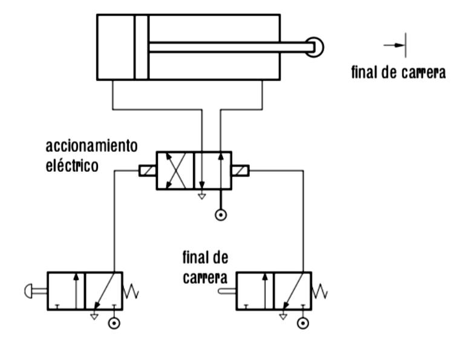
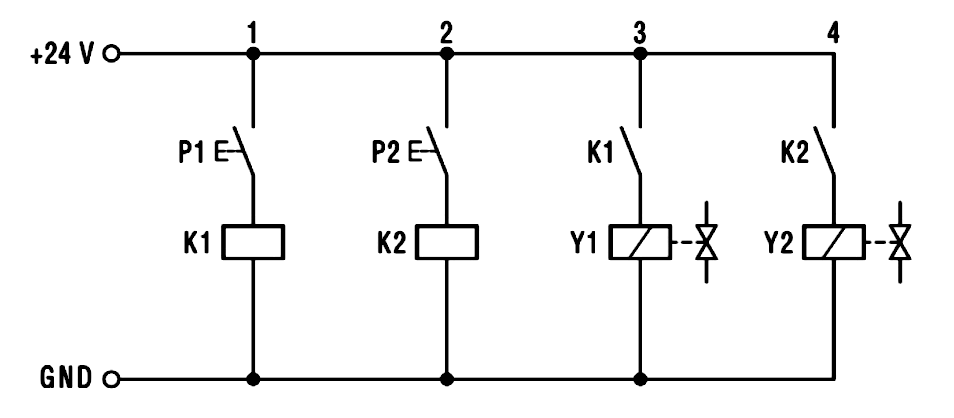
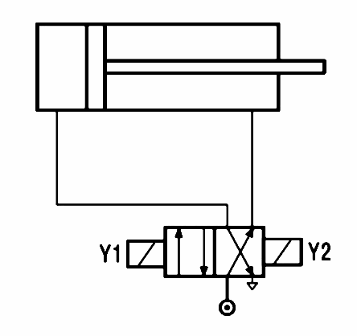

Sesión 11
A continuación veremos una serie de circuitos básicos en neumática para entender su funcionamiento, lo que nos permitirá tener una idea clara de cómo diseñar circuitos neumáticos más complejos combinando estas técnicas básicas.
Mando manual de cilindros con pulsadores
Vemos algunos ejemplos de control básico de cilindros mediante pulsadores:
Cilindro de simple efecto con válvula 3/2
Este circuito básico consiste en controlar manualmente, mediante un pulsador, el funcionamiento de un cilindro de simple efecto. Al pulsar, el cilindro sale y, al soltar, el cilindro se retrae.
Circuito con componentes:
Circuito con símbolos:
Cilindro de doble efecto con válvula 5/2
En este caso, al igual que en el anterior, se quiere que el cilindro salga al pulsar el botón y se retraiga al soltarlo. La diferencia es que, en esta ocasión, utilizamos un cilindro de doble efecto porque se necesitará realizar un trabajo importante también en el retroceso.
Circuito con componentes:
Circuito con símbolos:
Control de un cilindro con dos pulsadores a la vez (válvula AND)
En este caso queremos controlar el funcionamiento de un cilindro desde dos pulsadores. El cilindro sólo debe salir si pulsamos los dos botones a la vez. En cualquier otro caso, debe retraerse (o permanecer retraído).
Circuito con componentes:
Circuito con símbolos:
Simulaciones interactivas
Aquí tienes algunos circuitos simples de ejemplo en un simulador online en el que puedes comprobar el funcionamiento de cada elemento:
- Cilindro de simple efecto:
- Cilindro de doble efecto:
- Lógica de control simple
Regulación de avance y retroceso de cilindros
En estos vídeos vas a ver ejemplos de cómo controlar la velocidad de avance y retroceso de un cilindro utilizando válvulas reguladoras.
Para un cilindro de doble efecto
Para un cilindro de simple efecto
Funcionamiento automático con finales de carrera
Ahora vemos ejemplos de circuitos que funcionan de manera automática utilizando finales de carrera (válvulas que se accionan mediante rodillo).
Movimiento intermitente de cilindro de doble efecto
En este circuito tenemos una válvula que se acciona mediante pedal y que es la que inicia el funcionamiento. La válvula queda enclavada y, mientras está en ese estado, el cilindro va saliendo y entrando alternativamente, modificando su comportamiento él mismo al activar los rodillos A1 y A2 de las válvulas.
En el vídeo se puede ver el funcionamiento del circuito:
Movimiento alternado de dos cilindros de doble efecto
Este circuito se activa mediante una válvula de accionamiento por palanca y enclavamiento.
- Cuando se activa la palanca, el cilindro 1 avanza y luego se retrae automáticamente al activar el rodillo A1.
- Cuando acaba la retracción, activa A0 lo que provoca que el cilindro 2 avance.
- El cilindro 2 funciona de forma análoga al 1: se retrae automáticamente al activar el rodillo B1 y, al acabar la carrera de retroceso, activa B0, lo que provoca que avance el cilindro 1.
- El proceso se mantiene repitiéndose indefinidamente hasta que volvamos a accionar la palanca (la soltamos del enclavamiento) y se bloquea el paso de aire al cilindro 1.
En este vídeo puedes ver el funcionamiento:
Control eléctrico
Avance por pulsador y retroceso automático
En el circuito neumático de la siguiente figura, utilizamos una válvula de accionamiento y retorno eléctrico, que gobierna un cilindro de doble efecto. Éste avanza su émbolo por medio del accionamiento del pulsador de la válvula de la izquierda. Una vez alcanza su posición final, retrocede por medio de un final de carrera colocado en el recorrido del vástago, que acciona a su vez la válvula de la derecha.

Cilindro de doble efecto controlado por dos pulsadores eléctricos
Queremos que, al accionar el primer pulsador P1, se produzca completamente la salida del vástago. El retroceso del vástago se producirá al accionar el segundo pulsador eléctrico P2.
La solución es plantea mediante el mando indirecto, con dos pulsadores que activan dos relés eléctricos. El funcionamiento es el siguiente:
- Al accionar el pulsador P1, el circuito eléctrico se cierra y se activa el relé K1. Un contacto abierto del relé K1 hace que la bobina Y1 de la electroválvula se active y esto provoca que el vástago del cilindro salga.
- Tras llegar el cilindro al final de su recorrido, permanecerá en esa posición hasta que actuemos sobre el pulsador P2;
- Al accionar P2, se activará el relé K2 y un contacto abierto de éste se cerrará, con lo que se activará la bobina Y2 de la electroválvula y esto producirá que el cilindro efectúe su movimiento de recogida.
El circuito eléctrico es este:

Y el circuito neumático sería tan simple como este:
